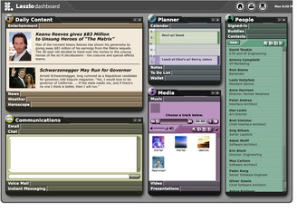

This application opens in a window. If you don't see it, you may need to bring that window to the front.
A desktop-style portal that brings several panels together in one application: Daily Content (entertainment, news, weather, horoscopes), Communications (chat and messaging), a Planner with a calendar and to-do list, a Media player for music and video, and a People directory with editable contacts.
Sign in with a name (or enter as a guest), then drag the windows around, switch
tabs, and play media. Originally a Flash showcase, it has been migrated to clean OpenLaszlo 4
and runs entirely in DHTML — the media plays through HTML5 <video> and
<audio>, and the chat uses the same WebSocket connection as the Chat demo.